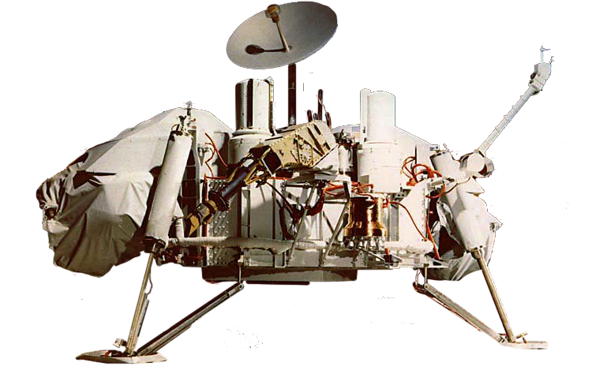

Exploration of Mars

The exploration of Mars has taken place over hundreds of years, beginning in earnest with the invention and development of the telescope during the 1600s. Increasingly detailed views of the planet from Earth inspired speculation about its environment and possible life —even intelligent civilizations— that might be found there. Probes sent from Earth beginning in the late 20th century have yielded a dramatic increase in knowledge about the Martian system, focused primarily on understanding its geology and habitability potential.

Viking Lander
The Viking 1 lander touched down on the surface of Mars on July 20, 1976 and was joined by the Viking 2 lander on September 3. The Viking landers conducted biological experiments designed to detect life in the Martian soil, as well as measure temperature, wind, and seismology.

Mars Rovers
Launched in 2003, Opportunity landed on Mars on January 25, 2004 on the other side of Mars from its twin rover Spirit. With a planned 90-day duration of activity, Opportunity is still active, gathering data and making scientific observations, and reporting back to Earth for over 40 times its designed lifespan.